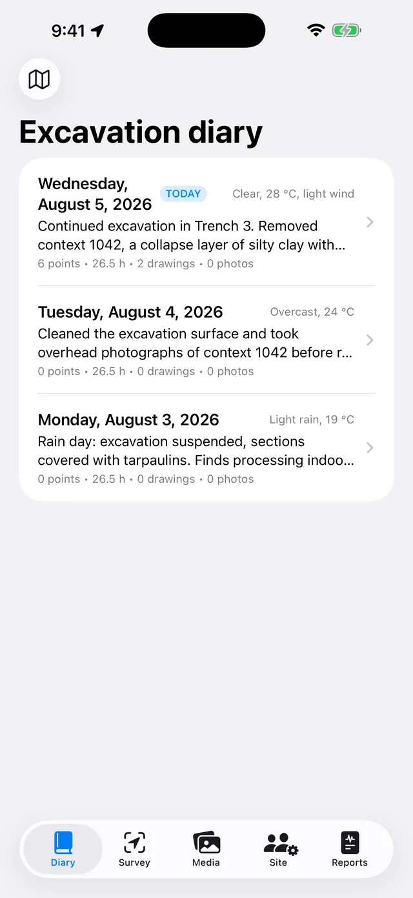
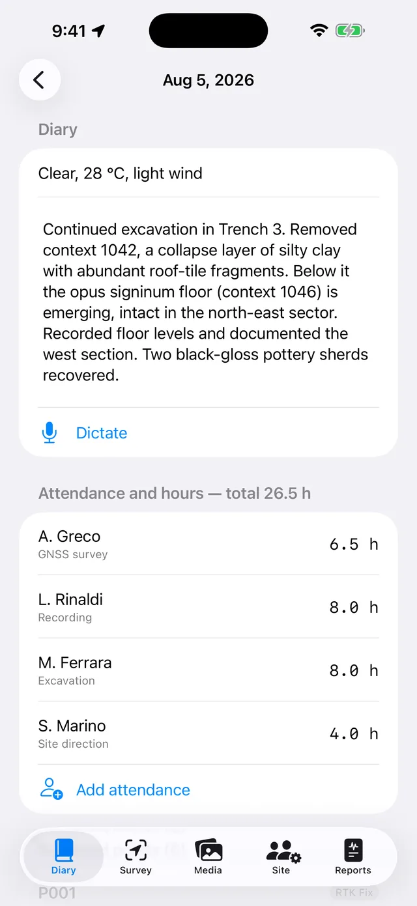
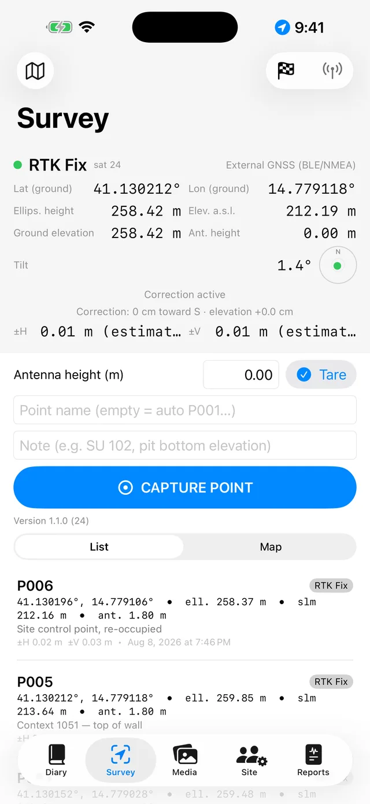
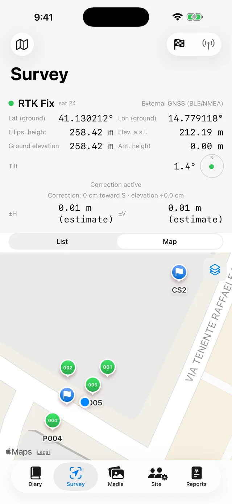
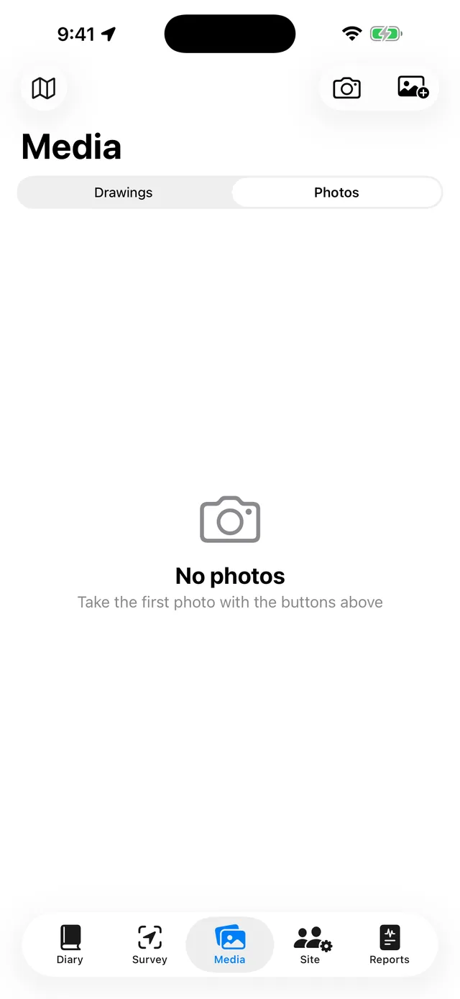
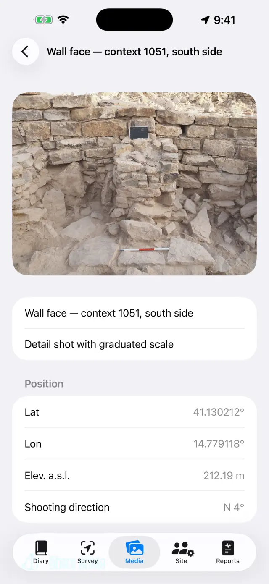
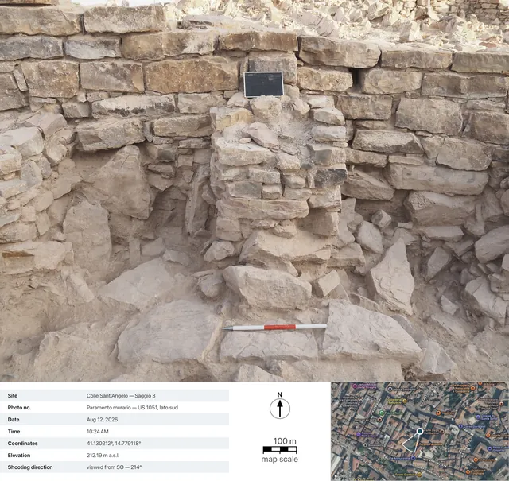
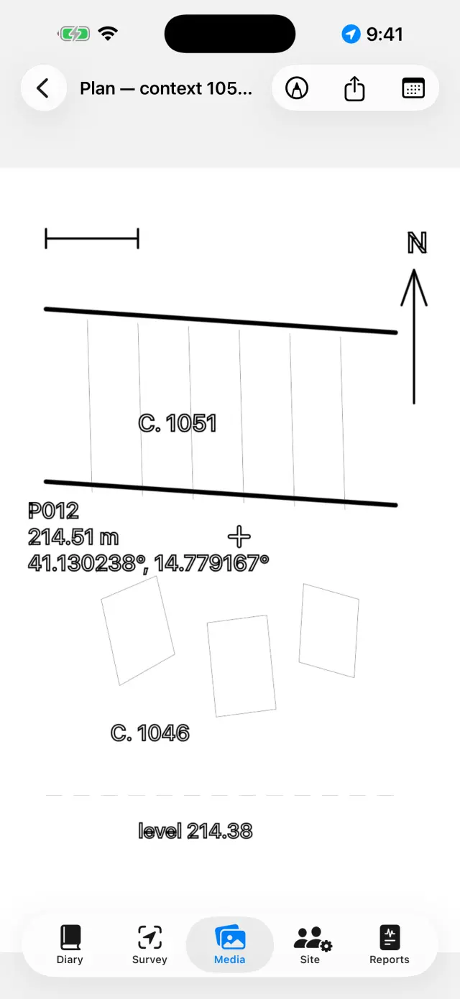
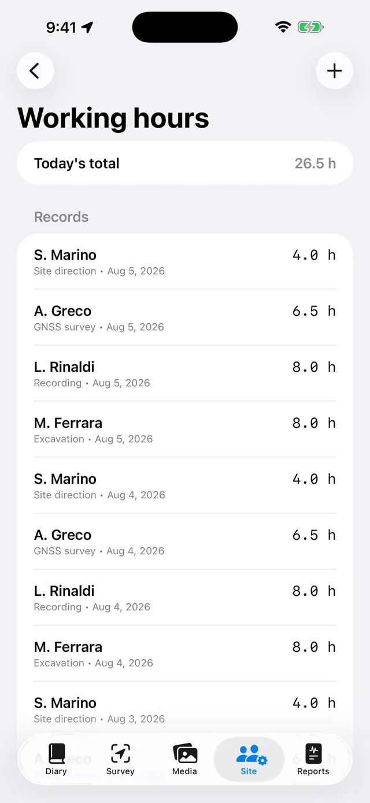
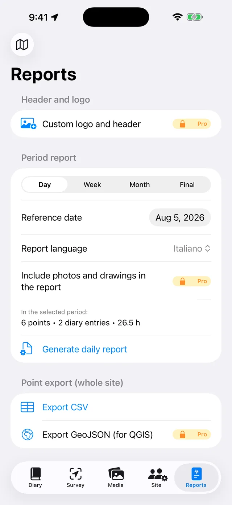

The digital excavation diary for iPhone and iPad. 100% offline: your data stays on your device.
In a nutshell
One idea drives everything: every dig day is a page that
fills itself in. You record things wherever they belong — a GNSS point in
Survey, a photo in Media, hours in Site — and the day's page in the
Diary collects them all automatically. At the end of the week, or of
the excavation, reports build themselves from the pages.
A typical day
MorningOpen the day's page, note the weather and diary (or speak it with Dictate)
CrewIn Site, record who is present and their hours
SurveyCapture GNSS points; check a benchmark first if you use RTK
PhotosShoot from Media: coordinates are attached automatically
DrawingsTrace the section or plan over a photo (digital tracing sheet)
EveningFrom Reports, generate the daily report: a PDF ready to send
First steps
On first launch you'll find a sample site. To create your own, tap the site
name at the top (the 🗺 icon) → New site… and give it a
name (e.g. "Colle Sant'Angelo — Trench 3").
The active site's name is always visible at the top: every tab shows that
site's data. Tap the name again to switch site: the list is under the
“Your sites” heading, and Rename site… lets you fix a name without
losing anything.
Grant permissions when asked: location (for points),
camera (for photos), microphone (for dictation),
Bluetooth (only if you use an external receiver).
The five tabs
📓 Diary
Tap a day to open its page: diary, weather, crew, points, photos and
drawings of that day are already there.
Write the diary or tap Dictate and speak: transcription happens
on the device and works with no network.
The weather can be typed by hand (e.g. "Clear, 28 °C, light wind") or fetched
with Fetch, which asks the Norwegian meteorological service for the
current conditions. It needs a network and only works on today's page:
yesterday's weather can no longer be recovered. A second tap in the afternoon
adds another measurement. Anything you type by hand always wins.
When fetching, only the area's position leaves the device, rounded to about
11 metres, and in reports the line appears in the report's language.

The list of dig days

A day's page
📍 Survey
The panel at the top shows the live position: coordinates, elevations,
accuracy and fix type (GPS / RTK Float / RTK Fix).
If you use a pole, set the Antenna height (m): the point's
elevation is reduced to the ground automatically.
Tap Capture point. Names are sequential (P001, P002…), but you
can type your own (e.g. "SU 102 — pit bottom") and add a note.
Switch between List and Map to see points in place;
from the map you can enable a cadastre or another WMS service.
Benchmarks (🏁) live in their own section: import them from CSV or create
them, then open Live check and watch the ΔN/ΔE/ΔZ residuals with the
pole tip on the nail, before you start surveying.
Under Level books you'll find the field book for the optical
level: stations, backsights and foresights, elevations calculated from a
starting benchmark, with a closure check. Levelled points enter the site with
their elevation, just like GNSS ones.
Below the panel sit the NMEA recordings: the raw stream from the
external receiver PRO is written to file by itself —
recording starts when you switch the antenna on and closes when you switch it
off, with nothing for you to remember. It is there to re-read a doubtful day,
or to hand the raw data to whoever post-processes it. Files can be shared and
deleted, except the one being recorded right now; the list opens with the
receiver off too, so yesterday's files stay within reach.

The Survey GNSS panel

Points and benchmarks on the map
Every point stores both elevations:
ellipsoidal and orthometric (a.s.l.). With the phone's internal GPS the
orthometric height may be unavailable: that needs an external receiver (see
below).
📷 Media
Shoot with the camera button or import from the photo library.
Photos are named sequentially (F001, F002…) and are geotagged with the
latest available GNSS position.
When you shoot, the app also records the shooting direction
from the compass: the photo's detail view and reports show “viewed from
SO — 214°”, and for shots taken straight down (plan view, the bottom of an SU)
a nadir caption with the direction of the top edge. If the compass is
disturbed, the app tells you.
Tap a photo to set its title and notes (e.g. "SU 102 from north").
Share photo recordPRO generates the
photo documentation record: the photo with the shot's data
below it (site, number, date and time, coordinates, elevation, direction), a
satellite view with a pin and the shooting cone, the map's scale bar and the
north arrow. The map needs a network: without one, the record still comes
out, with a larger data panel.

The photo gallery

A photo's detail view: coordinates, elevation and shooting direction

The exported record: the shot's data, the satellite view with the shooting cone, the map's scale bar and the north arrow
✏️ Drawings (in Media)
Create a new sheet and pick a site photo as its background: that's your
digital tracing sheet. A drawing can continue across several days. You can
also leave the photo out: a blank sheet draws just as well.
Trace layers, cuts and stones with a finger or Apple Pencil.
Pinch to zoom (up to 6×, two-finger double-tap to return to
1×). If the photo covers your strokes, choose Background opacity…
from the camera menu and take it wherever you need, from 5% to 100%: it fades
the photo, not the drawing. The choice stays with the sheet and holds in PDF,
DOCX, PNG and Export with legend too.
Everything else sits under Tools (the spanner in the toolbar),
which is the index of the six modes: Text box, TracePRO, Photo scale, Point with
elevation, Hatch and Line style. Only
one is held at a time: the tick says which, and while it is on
your finger doesn't draw but drives that tool — tap the ticked entry again to
go back to drawing. The three entries that work on the image (trace, scale,
point with elevation) only appear if a background photo is there.
With Text box you place the labels (e.g. "SU 1002"): they can be
moved, resized with a pinch, and come with four fonts to choose from.
TracePRO recognises the outline of the
object you tap (a stone, the edge of a layer) and turns it into a stroke:
colour, thickness and line style can be changed without leaving the mode, and
the outlines come out smooth instead of stepped. Everything happens on the
device, with no network.
Inside tracing, Trace everythingPRO
goes over the whole photo on its own. In the start sheet you decide the
styling — Outlines only, or a hatch and perhaps a Colour
wash — and press Start: the bar says how far along it is, and
it takes some tens of seconds. What appears is a preview, not
the drawing: a tap inside a shape excludes it, another brings it back (among
overlapping shapes the smallest one under your finger wins), Fine
pass goes over again only where it had found nothing, and
Apply puts what is left onto the drawing. Until you apply, the sheet
is untouched.
With the Photo scale tool (ruler) you tap the two ends of a
known measurement — a length of the ranging pole — and enter the true distance:
the photo picks up the scale, and from then on exports speak in metres.
With Point with elevation you place the crosshair of a GNSS
point from the site (or a hand-entered point) on the photo: name, elevation
and coordinates appear in a draggable label with a leader line. Pinch on the
selected label to shrink or enlarge it, when the values cover the drawing.
The Hatch fills shapes: you tap inside a closed
shape and it fills. There are the ten conventional hatches —
Masonry / stone, Brick, Mortar / plaster,
Clay, Silt, Sand, Gravel,
Charcoal / ash, Bedrock, Wood — and the
Colour wash (a colour with its own opacity), on their own or
together. If one shape sits inside another the smallest under your finger wins;
Remove fill clears it. No photo is needed: filling works on the
shapes you have drawn, so it works on a blank sheet too.
The Line style dresses a stroke that is already
drawn: you tap it and choose between Continuous,
Dashed, Dotted and Dash-dot, adjusting the
thickness. Draw with this style makes the strokes that follow come
out dressed already; Remove style puts the line back to solid. It is
not a screen effect: the dashes are real segments, and they stay that way in
PDF, DOCX, PNG, SVG and DXF.
Export with legendPRO: the image
comes out with a white band underneath — a metric scale bar (if the scale is
set), a north arrow for photos taken straight down, “viewed from” for frontal
ones.
Export vectorPRO: SVG for the
drawing, or DXF for the GIS. With at least two points with
elevation and coordinates on a photo taken straight down, the DXF comes out
georeferenced in UTM and positions itself in QGIS
automatically; with only the scale set it comes out in local metres; with
neither, the app says so and won't produce a file with no units. The SVG is the
exception on opacity: it embeds the original photo just as it is, so a faded
background comes out there at full strength.
When you're done, hide the photo: the clean drawing stays, ready for the
report.

The digital tracing sheet
👷 Site
Record the day's attendance: each person's name, role and hours.
Keep the equipment inventory and who each item is assigned to.

Crew and hours
📄 Reports
Pick the type: daily (free, watermarked),
weekly, monthly or final
with full appendices PRO.
Pick the report language from seventeen, independent of the
app's language: the report can come out in German even if you use the app in
English.
Generate the PDF, or export DOCX with your logo and photos
PRO, CSV of the points, GeoJSON for QGIS
PRO.
With photos in reports switched on, you can choose Photo records
instead of photosPRO: every photo enters the
PDF and DOCX as a full documentation record with data and map, in the
report's language.

Report generation
External GNSS receiver and NTRIP
With an external receiver (centimetre-grade antenna) the app reaches RTK
accuracy. The internal GPS always remains available as a fallback.
Turn the receiver on and enable Bluetooth on the phone.
In Survey, choose the position source: External GNSS
(BLE/NMEA)PRO and pick your receiver from the
list. MFi receivers (free) and receivers that stream NMEA over the network are
supported too.
For RTK corrections configure NTRIP: caster address, port,
mountpoint, username and password (stored in the device keychain). The app
sends your position to the caster and receives corrections.
Wait for RTK Fix: centimetre accuracy. Check against a
benchmark before you start.
Where the phone has no signal, there is also the road
without internet: a base planted on a known point and a rover
swapping corrections over LoRa radio, with no caster and no
SIM (DFRobot RTK kit with an ESP32 bridge). Nothing changes for the app — it
receives already-corrected NMEA from the receiver — and building the bridge is
documented separately, in its own README: this stays a guide to the app, not a
firmware manual.
Backup and exchange
From the site menu tap Export site (.zip): everything is inside
— diary, points, photos, drawings, hours, benchmarks.
Keep the ZIP wherever you like (Files, Drive, e-mail…). It is your backup:
the app has no cloud, by design.
Import site (.zip)… recreates the site on another device, even
between iPhone and Android.
⚠️ Delete site… removes the site with everything in
it and is irreversible: export a ZIP first if in doubt.
Free and Pro
Free
Pro
Sites
1
Unlimited
GNSS
Internal GPS, MFi receivers
+ BLE/NMEA, NTRIP
Reports
Daily, watermarked
All, no watermark
Export
PDF, CSV
+ DOCX with logo and photos, GeoJSON
Drawings
Tracing sheet, zoom, text boxes, scale, points with elevation, hatches, line styles, background opacity
+ Export with legend, SVG/DXF
Automatic tracing
—
By tap and “Trace everything”
NMEA recordings
Re-reading and sharing the files
The recording (needs the external antenna)
Level books
✓
✓
Photo record
—
Sharing and records in reports
Voice dictation
✓
✓
Report languages
17
17
Pro is a monthly or yearly auto-renewing subscription, or a one-time
lifetime purchase. Manage or cancel it any time in your Apple Account
settings.
Troubleshooting
The Bluetooth receiver doesn't appear or won't connect
Check, in order:
the receiver is on and not already connected to another app or phone;
system Bluetooth is on and the app has the Bluetooth permission
(Settings → Giornale di Scavo);
the source chosen in Survey is External GNSS (BLE/NMEA);
power-cycle the receiver, then search again.
I never reach RTK Fix
An active NTRIP connection is required: check caster, mountpoint and
credentials.
Check the phone's data coverage: corrections travel over the internet.
Open sky matters: dense trees and nearby walls degrade the signal. In poor
conditions you may stay in RTK Float (decimetre level).
Choose a nearby mountpoint (< 30–40 km) or a VRS network.
NTRIP won't connect
Verify address and port (often 2101) and that the mountpoint exists: most
casters publish the list (sourcetable).
Wrong username or password gives a 401/403 error: re-check the credentials.
Some networks require your position (GGA): the app sends it automatically,
but the receiver needs an initial fix first.
The elevation a.s.l. is empty or zero
Phone GPS provides only the ellipsoidal height. The orthometric height
(a.s.l.) comes from the GGA sentence of an external receiver. Without one,
points still store the ellipsoidal height.
Dictation doesn't work
Check the microphone and speech recognition permissions in Settings.
Transcription is on-device: the first time, the system may need to download
the language model (network needed once, then it works offline).
Speak in short sentences; the text is appended to the diary.
The cadastral map (WMS) doesn't show
The app is offline, but WMS layers are web services: they need a connection
and a working service. The Italian cadastre is preconfigured; for other
countries enter your national service's WMS endpoint (it must support
EPSG:3857). Out of data coverage, the base map and your points remain
visible.
Photos have no coordinates
A photo takes the position from the latest GNSS fix: open Survey first and
wait for a position, then shoot. If the location permission is denied, photos
are saved without coordinates.
Photos or the logo are missing from a report
Photos in reports, the logo and the custom header are part of Pro and apply
to DOCX and PDF. The free daily report carries a watermark and does not include
photos.
I deleted a site by mistake
Deletion is final: the data cannot be recovered (there is no cloud). If you
exported a ZIP earlier, import it to restore the site as of that date. Tip:
export a ZIP at the end of each day.
I bought Pro but it's still locked
Tap Restore purchases on the Pro screen, using the same Apple
Account as the purchase. If you changed device, restoring recovers the
subscription or the lifetime licence.
“Fetch” is greyed out, or says “Weather unavailable”
if the button is greyed out you are on a past day's page: weather can only
be fetched on today's;
if you see “Weather unavailable” there is no network, or the site has no
GNSS point yet to take the position from — record a point and try again.
The photo record comes out without a map
The satellite view comes from Apple and needs a network: the app waits up
to 15 seconds, then generates the record without a map (the data doesn't wait
for the network). On slow site networks it can take the full wait: try again
under Wi-Fi. Without coordinates on the photo, there is no map by
definition.
“Trace everything” finds nothing, or finds too much
the pass works on the background photo: with no photo the command isn't
there, and while it reads “Preparing the photo…” the model isn't ready yet —
wait for it;
if the shapes are too few, press Fine pass: it goes over again
with a denser grid, only where the first pass had seen nothing, and adds what
it finds without bringing back what you had excluded;
if they are too many, don't apply everything: in the preview tap the extra
shapes to exclude them one by one, then Apply. What you exclude
never reaches the drawing;
flat photos — little contrast, midday light, ground all the same colour —
give few outlines, and there is no way round it: there the single-tap trace
does better, because it knows where you are looking;
if you are left with a mass of tiny shapes, try again with Outlines
only: they read better, and the hatch can always be laid on afterwards,
by hand.
The stroke won't take a style
the tap looks for the nearest line within a fingertip's radius: if the
stroke is thin or the area crowded, zoom in and tap more
precisely, right on the ink;
only strokes can be dressed. Fills, text boxes and the
crosshairs of points with elevation are not lines, and don't answer under your
finger;
if “This stroke cannot be restyled” appears, among the lines the tap
gathered there is one that is not a line: the dot left by a still tap, or a
stroke that arrived broken from an imported archive. Delete the dot and try
again, or tap the line at a point far from it. A dot on its own simply cannot
be dressed: there is no way to make a dashed line out of a point;
if between the tap and Apply you undid something or drew
something else, the selection releases itself so as not to dress the wrong
stroke: tap the line again and retry.
The hatch doesn't appear when I tap inside the shape
the shape must be closed, and closed by a single
stroke: start and come back almost to the same point without lifting
your finger (a few millimetres of gap are tolerated). Two lines that touch at
their ends stay two open lines, and flooding a sheet past an edge nobody drew
would be worse than not filling it at all;
the outlines produced by Trace are closed by construction: those
always fill;
if the shapes sit one inside another, the tap takes the
smallest one containing it — to fill the large one, tap at a
point that lies outside the small ones;
did you tap inside the shape, and not on its edge? The target is the area,
not the line.
The DXF is rejected, or opens “near the origin” in the GIS
a georeferenced DXF needs a photo taken straight down
with the app's camera and at least two points with elevation and
coordinates, well spread out on the photo;
with only the ranging pole's scale, the DXF comes out in local
metres: that's correct, but the GIS shows it near the origin — the
app tells you beforehand;
without scale or points, the export is refused: a DXF with no units
wouldn't be meaningfully readable by any GIS.
I faded the background, but the SVG comes out with the photo at full strength
That is how it is and how it stays: the SVG carries the original
file of the photo inside it, not a faded copy of it, and lightening it
would mean re-compressing it — that is, making it worse for everyone who opens
the SVG to work on it. Background opacity… holds in the editor, in
the PDF, in the DOCX, in the PNG and in Export with legend. If you
need the vector without the photo, choose SVG — drawing only; if you
need the faded photo, export to PNG or go through the report.
The north arrow doesn't appear in the export with legend
The arrow only appears for photos taken straight down with the
app's camera, which records the azimuth at the moment of the shot.
Frontal photos get the “viewed from …” caption instead (a north arrow on the
plane of a front elevation would be a geometric lie); photos imported from
the library get neither, because the shooting data is missing.